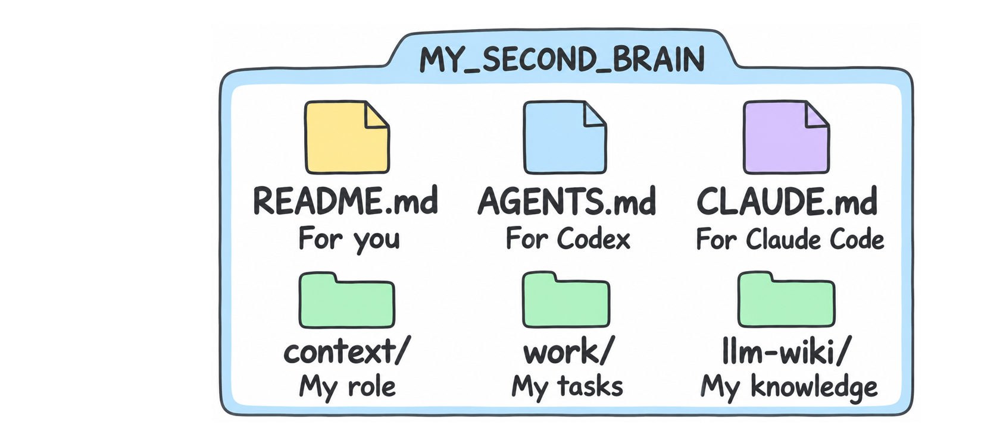

โฟลเดอร์เหมือนแฟ้มที่ใส่เอกสาร ไฟล์คือเอกสารแต่ละฉบับ .md ย่อมาจาก Markdown เป็นข้อความที่จัดหัวข้อและรายการได้ เครื่องหมาย / ในแผนผังแสดงโฟลเดอร์ ไม่ใช่ส่วนที่ต้องเติมต่อท้ายชื่อเอง

MY_SECOND_BRAIN/ ├── README.md ├── AGENTS.md ├── CLAUDE.md ├── context/ │ └── me.md ├── work/ │ └── tasks.md ├── llm-wiki/ │ ├── AGENTS.md และ CLAUDE.md │ ├── raw/ │ └── wiki/ │ └── index.md ├── .agents/skills/onboard/SKILL.md ├── .claude/skills/onboard/SKILL.md ├── references/ ├── data/state.json ├── app/ ├── apps/3d-brain/ ├── OPEN_FIRST.html └── คู่มือและตัวเปิดแอปตามตารางด้านล่าง
แผนผังย่อ ไม่แสดงไฟล์โปรแกรมทุกไฟล์ .agents และ .claude อาจซ่อนอยู่ในเครื่องของคุณ
| ชื่อ | หมายถึงอะไร | ใช้อย่างไร |
|---|---|---|
| README.md | ป้ายเริ่มต้นสำหรับคน | อ่านก่อนเริ่ม บอกว่าชุดนี้มีอะไรและเริ่มอย่างไร |
| AGENTS.md | คู่มือของ Codex | กติกาการทำงานและทางไปอ่านข้อมูล เป็นไฟล์ข้อความ ไม่ใช่ตัว AI |
| CLAUDE.md | คู่มือของ Claude Code | กติกาหลักตรงกับ AGENTS.md ในชุดนี้ |
| context/ | แฟ้มข้อมูลเกี่ยวกับตัวเรา | เก็บหน้าที่และเป้าหมาย |
| context/me.md | หน้าที่และเป้าหมายของฉัน | เติมตามบทบาทจริงผ่านโปรไฟล์ Dashboard หรือให้ AI ช่วยอย่างระมัดระวัง |
| work/ | แฟ้มเอกสารงาน | เก็บรายการงานและเอกสารเกี่ยวกับงาน |
| work/tasks.md | รายการงานที่อ่านได้ | Dashboard เขียนสำเนาให้อ่าน การแก้ไฟล์นี้อย่างเดียวไม่เปลี่ยน Dashboard |
| llm-wiki/ | คลังความรู้ของเรา | รวมต้นฉบับและความรู้ที่สรุปเชื่อมกัน |
| llm-wiki/raw/ | ต้นฉบับ | เก็บหลักฐานเดิม ไม่เขียนทับให้กลายเป็นบทสรุป |
| llm-wiki/wiki/ | ความรู้ที่นำมาใช้ซ้ำ | บทสรุปและหัวข้อที่มีลิงก์กลับต้นทาง |
| llm-wiki/wiki/index.md | สารบัญความรู้ | เริ่มที่นี่เพื่อหาหัวข้อที่ต้องใช้ |
| llm-wiki/AGENTS.md และ CLAUDE.md | คู่มือเฉพาะการดูแล Wiki | บอก AI วิธีเพิ่มแหล่ง สรุป เชื่อมลิงก์ และตรวจคุณภาพ |
| .agents/skills/ | วิธีทำงานสำหรับ Codex | แต่ละ Skill เป็นโฟลเดอร์ย่อย เช่น onboard |
| .claude/skills/ | วิธีทำงานสำหรับ Claude Code | มี Skill ชุดเดียวกันสำหรับเครื่องมือนี้ |
| …/onboard/SKILL.md | คู่มือวิธีใช้ onboard | ชื่อ SKILL.md เป็นเอกสารวิธีทำงานภายในโฟลเดอร์ของทุก Skill |
| references/ | เอกสารอ้างอิง | คำแนะนำว่าควรใช้แหล่งข้อมูลใดและตรวจอะไร |
| data/ | ข้อมูลที่แอปบันทึก | แอปจัดการข้อมูลเบื้องหลัง ผู้เรียนใช้ Dashboard |
| data/state.json | ข้อมูลหลักของ Dashboard | JSON เป็นรูปแบบข้อมูลให้โปรแกรมอ่าน ใช้หน้า Dashboard แก้ข้อมูล |
| app/ | ตัว Dashboard | ไฟล์โปรแกรมและการตั้งค่า ผู้ดูแลใช้เมื่อจำเป็น |
| apps/3d-brain/ | ตัวแผนที่ความรู้ 3D | ไฟล์ที่ใช้เปิดแผนที่และอ่านโน้ต |
| OPEN_FIRST.html | หน้าเริ่มต้นใน Browser | เปิดอ่านวิธีติดตั้งและเริ่มใช้งาน |
| START_HERE_TH.md / SETUP_TH.md | คู่มือติดตั้งภาษาไทย | วิธีเปิดแอป ตรวจเครื่อง และแก้ปัญหา |
| START_HERE_EN.md | คู่มือเริ่มต้นภาษาอังกฤษ | เส้นทางเริ่มแบบสั้น |
| SKILL_COMBINATIONS_TH.md | คู่มือ Skill 1–5 | เลือกชุดเริ่มต้น ปรับปรุง หรือจัดความรู้ |
| SKILLS_TH.md | รายชื่อ Skill | แยกห้าตัวหลักกับตัวช่วยงานประจำ |
| HANDS_ON_TH.md | แบบฝึกลงมือ | ใช้กับงานจริงในห้องเรียน |
| DAILY_GUIDE_TH.md | วิธีใช้ทุกวัน | ช่วยเลือกงาน ทำงาน และตรวจผล |
| SOURCE_NOTICES.md | ที่มาและข้อสังเกต | อธิบายแหล่งที่มาของส่วนประกอบในชุด |
| CHECK_WINDOWS.cmd / CHECK_MAC.command | ตัวตรวจเครื่อง | ตรวจไฟล์ Node.js และความพร้อมก่อนเปิด |
| OPEN_WINDOWS.cmd / OPEN_MAC.command | ตัวเปิดแอป | เปิด Dashboard และ 3D Brain บนระบบที่ตรงกับเครื่อง |
| FOLDER_GUIDE_TH.html / .md | คู่มือโครงสร้างฉบับนี้ | เปิด HTML ใน Browser หรืออ่าน MD เป็นข้อความ |
เปิด README แล้วชี้ me.md, tasks.md และ index.md ให้เพื่อนดู บอกว่าควรใส่ข้อมูลอะไรไว้ที่ไหน